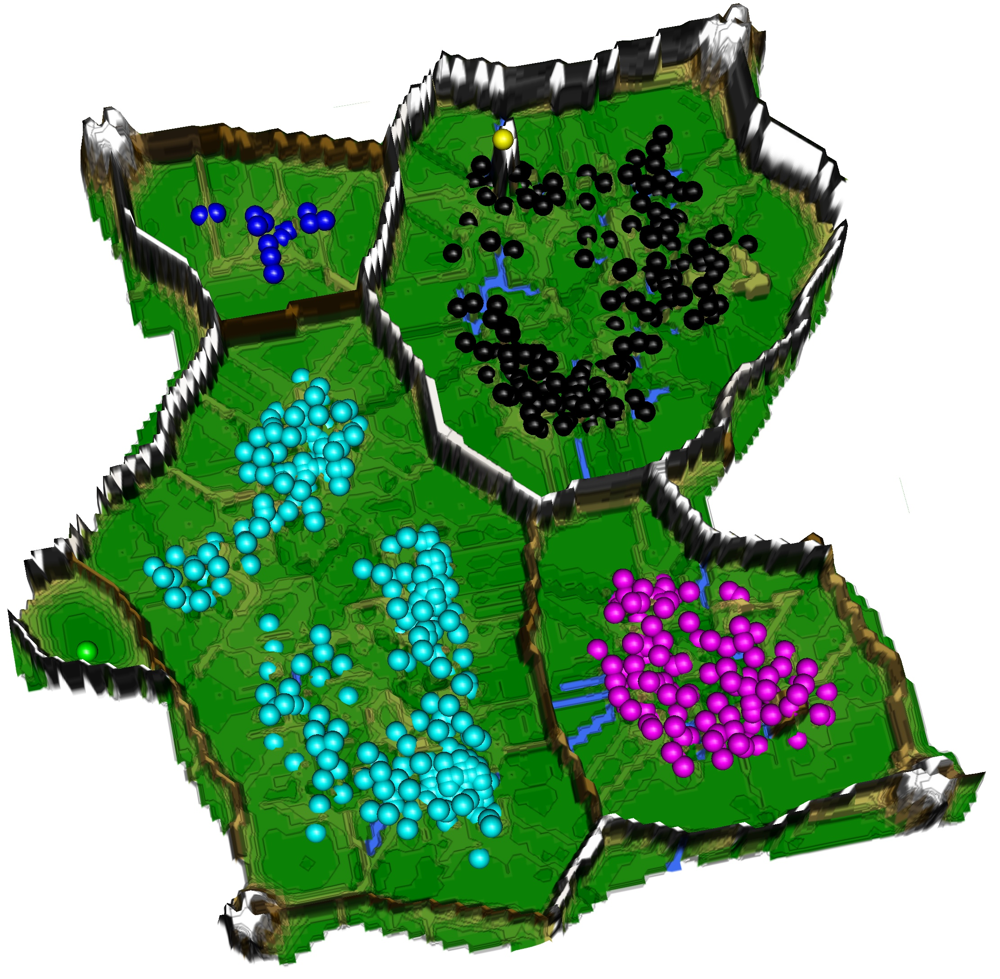
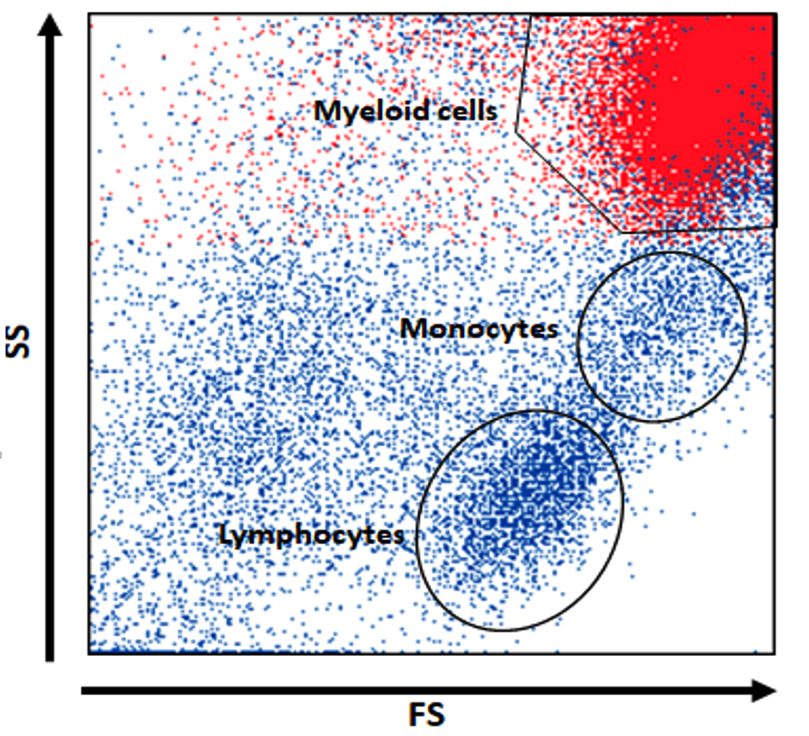
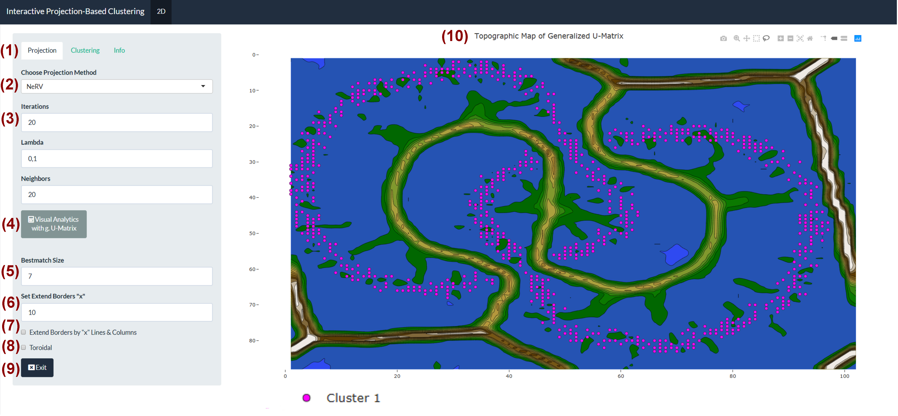
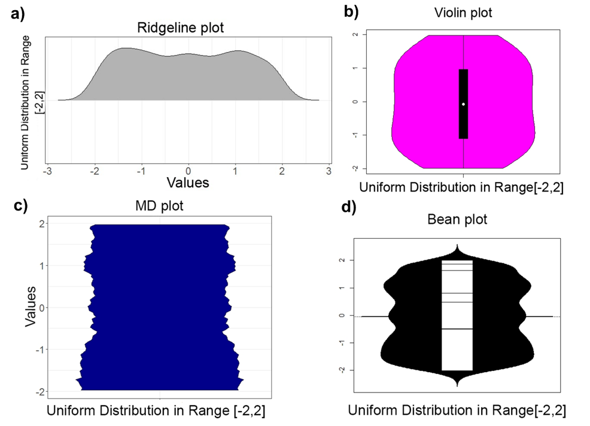
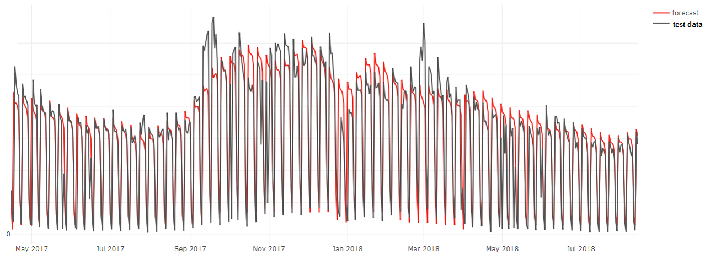

Research & Projects
Decision support, explainable AI, machine learning and knowledge discovery across disciplines.
Explore ProjectsResearch Profile
My research connects five closely related areas: decision support systems, explainable AI, machine learning, knowledge discovery and data science . Across these areas, the goal is to transform complex data into transparent and useful support for human decisions. Methods are developed in an interdisciplinary setting and evaluated together with domain experts in medicine and life sciences, environmental research, archaeology, finance, logistics and industrial analytics.
Recurring methodological themes include human-in-the-loop analysis, case-level self-assessment, structure discovery in high-dimensional data, classification, clustering, visualization and time-series forecasting. The selected projects below illustrate both methodological research and its transfer into practical decision-support systems.

Explainable AI and Human-Centered Knowledge Discovery
Explainable AI should do more than attach a generic explanation to a black-box prediction. My research starts from structures in the data and develops models whose evidence, rules and limitations can be inspected by domain experts. The work combines unsupervised structure discovery, interpretable classifiers, visual analytics and human-in-the-loop interaction. A central design principle is that explanations must be relevant to the actual decision task and expressed in a form that domain experts can examine. This approach has been applied to hydrochemical time series , financial data and high-dimensional biomedical measurements .
Decision Support Systems
My decision-support research and development connects data integration, machine learning, uncertainty handling and interactive user interfaces. Systems have been developed for medical diagnostics, sales and supply-chain forecasting, workforce and capacity planning, energy and financial time series, and insurance underwriting and pricing. One project supports daily decisions in WTI crude oil futures trading by combining web analytics and market data, selective abstention when the available information is insufficient, daily model retraining to address concept drift, and simulated position management for risk assessment. Depending on the application, the systems provide case-level self-assessment, abstain when the available information is insufficient, adapt to concept drift, or translate statistical quality measures into domain-specific risk, cost and performance indicators. The aim is not to replace accountable experts, but to provide transparent and practically usable support for complex decisions.

Knowledge Discovery
My knowledge-discovery research investigates how meaningful structures, subgroups and atypical cases can be identified in complex, high-dimensional data and translated into domain-relevant knowledge. Applications include tumor transcriptomics, biomedical measurements, environmental data, finance and archaeology, using self-organizing methods, clustering, classification and visual analytics in close collaboration with domain experts. In archaeology, the study Projection-based Classification of Chemical Groups and Provenance Analysis of Archaeological Materials used chemical measurements to identify material groups and investigate provenance; the work was also presented in Wissenschaft.de . Across these domains, expert review remains central to interpreting discovered structures and assessing their scientific or practical relevance.
Selected Interdisciplinary Projects
Inflame.AI: Explainable Differentiation of Inflammatory Conditions
Inflame.AI investigates whether rapidly available clinical parameters can support the differentiation of bacterial infections, viral infections, autoimmune diseases and controls. The system combines blood-count parameters, C-reactive protein and flow-cytometry measurements with interpretable machine-learning models. The resulting decision rules allow clinicians to inspect which variables contributed to an individual classification. The published study demonstrates the potential of explainable AI for rapid differential support, while also showing that larger and prospective validation is needed before clinical deployment. The project was communicated through university and national media .

FlowXAI / PLAIT: Self-Explaining Lymphoma Decision Support
FlowXAI is a self-explaining decision-support system for classifying B-cell non-Hodgkin lymphoma from multiparameter flow-cytometry data. It combines unsupervised sample-quality assessment, interpretable identification of diagnostically relevant cell populations and a hierarchical classification workflow aligned with clinical practice. Each prediction is assigned a case-level trustworthiness category—confident, probable or challenging—so that experts can focus attention on uncertain or atypical cases. The system was evaluated on 19,493 peripheral-blood samples and an external dataset from a second diagnostic center, achieving performance comparable to a deep-learning reference with substantially fewer training samples. FlowXAI is designed for decision support and training, not as a replacement for integrated clinical diagnosis. Publication · Interactive platform · University press release .

Interactive Projection-Based Clustering
Interactive Projection-Based Clustering (IPBC) supports the exploration of cluster structures in high-dimensional data. It combines dimensionality reduction, topographic visualization and user-guided analysis so that alternative groupings can be inspected rather than accepted as a single opaque result. The open-source tool can be used interactively or in an automated workflow and is intended for both methodological research and interdisciplinary knowledge discovery. Read the associated publication .

Mirrored Density Plot (MD Plot)
The Mirrored Density Plot (MD plot) is a parameter-free visualization for exploring empirical distributions. It helps reveal skewness, multimodality, clipping and heterogeneous subgroups without requiring users to tune kernel-density bandwidths. The method supports transparent pre-model analysis, quality control and communication of distributional structure and is implemented in the open-source DataVisualizations package. Publication · Documentation .

Databionic Swarm
Databionic Swarm is a self-organizing approach to projection and clustering of high-dimensional data. Interacting agents adapt to distance- and density-based structures without relying on a single global clustering objective. The resulting topographic map supports the visual assessment of clusters, separating structures and outliers, and can indicate when the data do not support a meaningful partition. The method connects swarm intelligence, emergence, game-theoretic ideas and knowledge discovery and is available as open-source R software. Publication · Software .

Explainable AI for Stock Selection
This project studies how quarterly fundamental company data can be converted into inspectable rules for stock selection. Distance-based structures guide the construction of interpretable decision trees, and the resulting subsets and rules are reviewed by a human analyst. The work is a methodological case study in explainable decision support under small-sample, high-dimensional conditions. It is not investment advice and does not replace independent financial assessment. Read the publication .

Decision-Oriented Forecasting for Workforce Management
Call-center forecasting is useful only when it supports the staffing decision. This project therefore aligned model development and evaluation with service-level and capacity-planning objectives instead of relying solely on symmetric forecast-error measures. Five years of historical call and weather data were modeled using an ensemble of additive decomposition and random-forest regression with a 14-day forecast horizon. The project illustrates a general principle of decision support: data representation, loss functions and evaluation criteria should reflect the operational consequences of over- and under-forecasting. Related methodological work is presented in Multiresolution Forecasting for Industrial Applications (Processes, 2021), and its practical relevance is discussed in a Research Outreach feature .